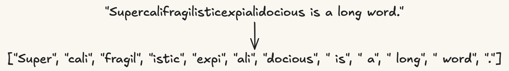
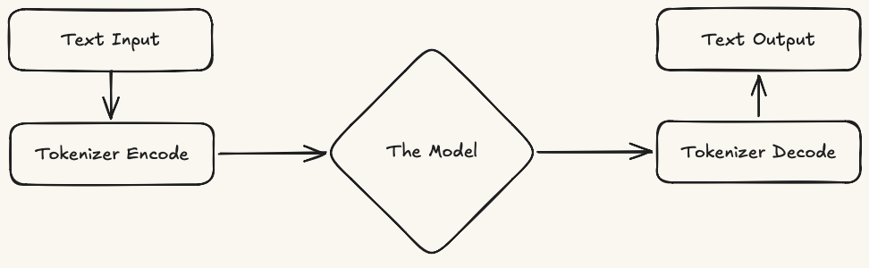
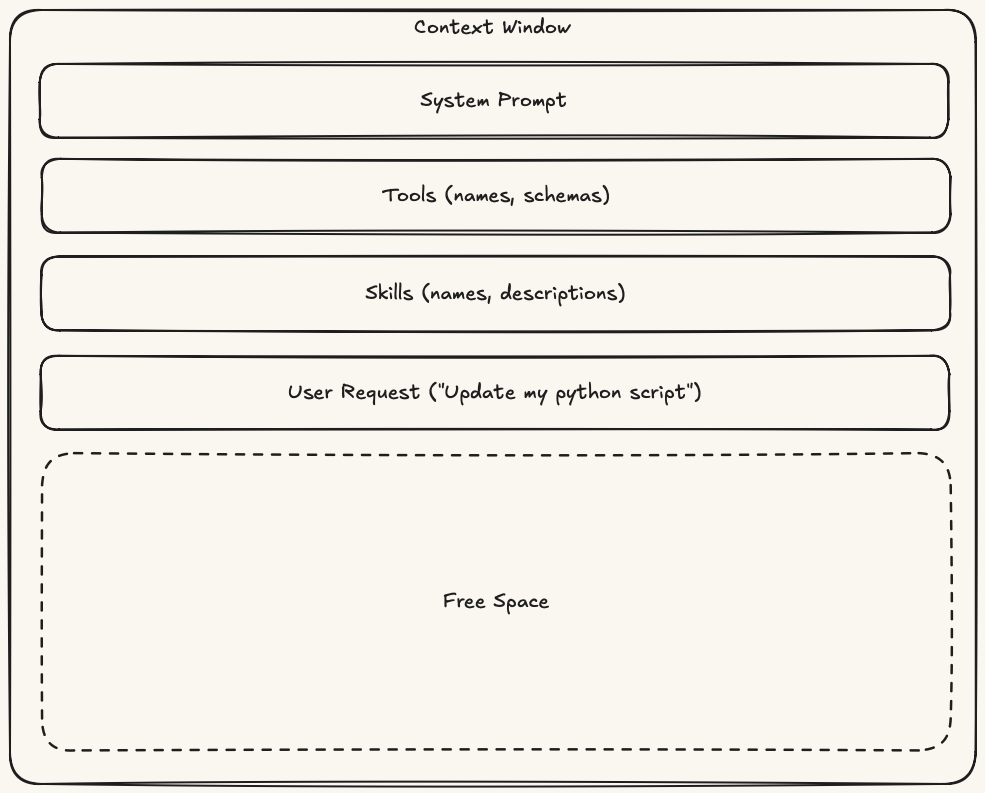
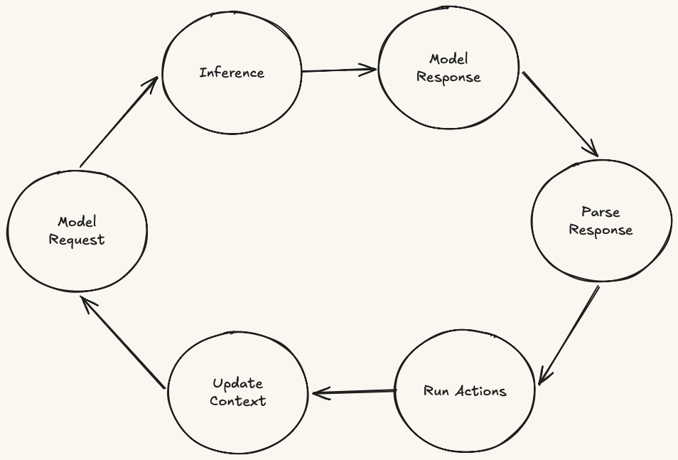

What tools, skills, agents, subagents, and MCP actually do once you look past the names.
Anthropomorphic metaphors have their place in how we talk about agentic systems. Calling an agent a persona or a subagent a teammate can speed up early design conversations.
Even skill, now the industry-standard term, frames a conditionally-loaded set of instructions as a competency the agent possesses. For engineers without a working intuition, it is worth setting the metaphors aside long enough to see what each component actually does.
Ask what the model can see, what the harness can execute, and what happens to context between model requests.
Tokens, models, inference, context windows, harnesses, and loops.
A token is a chunk of text used for processing, prediction, counting, and billing. Tokens are not necessarily words.
Token counts matter for limits and cost. Two sentences with the same number of words can require different amounts of processing.

A model receives text, processes it as tokens, and returns predicted text. It does not remember previous requests, execute code, inspect your environment, or take action.
When we say a model has a tool, uses a skill, or acts as an agent, we are describing harness behavior around the model, not properties inside the model.
An inference is one pass through a model: input text is processed as tokens, and predicted text is returned.
An inference is not a conversation, workflow, or action loop. One inference has no memory of another unless earlier text is sent again.

The context window is the set of tokens the model can use during a single inference. Anything outside it does not exist to the model.
System prompts, tool schemas, file snippets, skill bodies, tool results, and subagent summaries only matter if the harness includes them in the next request.

The harness is the runtime responsible for constructing model requests, parsing model responses, executing requested actions, and deciding what populates the next context window.
Builds the input text, tool schemas, and selected context.
Runs allowed actions in its own environment, outside the model.
Places results back into the next model request.
The agentic loop sends a model request, receives a response, parses requested actions, runs allowed actions, updates context, and repeats until no further actions are requested.
Strip the loop away, and you have a standard chatbot. Add it, and you have a system capable of chaining actions together to achieve a goal.

Compare constructs by initialization, loop scope, and payload.
When does its model-visible payload enter the context window?
Which agentic loop does this construct operate within?
What gets added to the context window?
| Construct | Initialization | Loop scope | Context payload |
|---|---|---|---|
| Tool | Session initialization | Current loop | Request schema only; implementation stays opaque |
| Skill | On skill request | Current loop | Manifest, instructions, scripts, files |
| Agent | On session start or agent selection | Defines the current loop | System prompt, toolset, skill set, permissions |
| Subagent | When a parent invokes it | Defines a child loop | System prompt, toolset, skill set, permissions |
The table flattens constructs for comparison. In practice, agents contain tools and skills, skills orchestrate tools, and subagents are agents with their own loops.
Tools, skills, agents, subagents, and MCP.
A tool is a named operation the harness makes available to the model through a description and request schema.
A skill is a named bundle of procedural knowledge made available through a description. When requested, the harness reads the full body into the next context window.
Only the name and brief description sit in the prompt until the skill is requested.
The model can read instructions, supporting files, scripts, templates, and prose.
Skills compose with tools rather than replacing them: a skill gives the model procedure; tools provide executable operations.
An agent tells the harness how to run an agentic loop. It bundles a system prompt, toolset, skill set, permissions, and possibly subagents the loop may invoke.
Role, purpose, behavior, and constraints.
Operations the agent may request.
Procedural knowledge it may load.
Rules for actions and delegation.
With tools and skills defined, an agent becomes the harness configuration that composes them into a loop.
AGENTS.md, CLAUDE.md, and similar repository instruction files are context sources. If a harness loads them, their contents become instructions inside a context window.
They do not define a separate loop, toolset, permission boundary, or execution configuration by themselves.
A subagent is a separate agentic loop started by the harness in response to a parent agent's request. It runs with its own context window, system prompt, and toolset.
The parent can hand off a clearly scoped task.
It isolates context and can run with narrower permissions.
The parent receives a summary, not the child's full history.
MCP lets a harness connect to external servers that expose tools, resources, or prompts. The harness must register or inject what the server provides before it reaches the model.
Once registered, it is a tool: schema enters context, implementation stays opaque, result returns as context.
Once injected, it is context, no different in kind from a local file or prompt fragment.
Evaluate constructs by behavior, not metaphor.
What can the model see? What can the harness execute? What happens to context between model requests?
Personas, runbooks, and teammates can be useful while sketching a system. They do not define implementation boundaries.